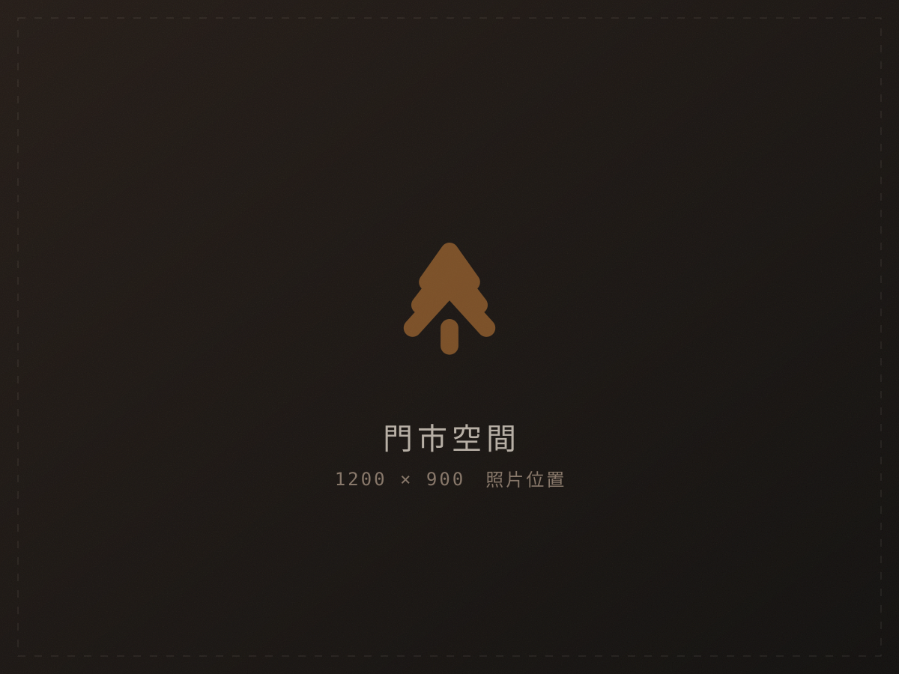
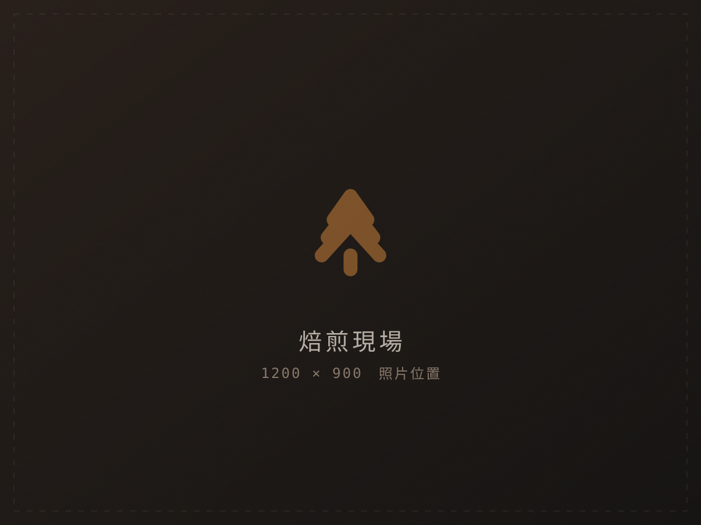
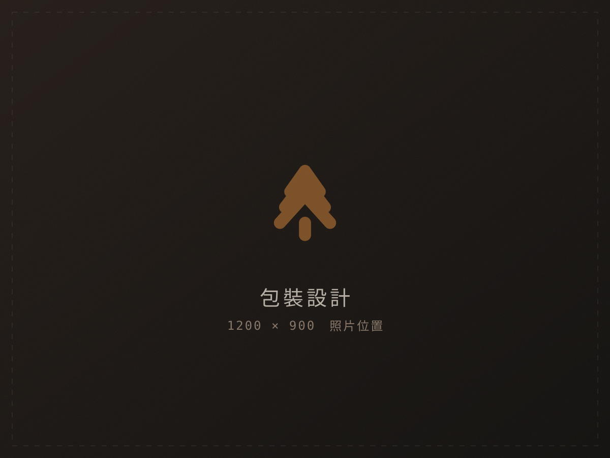
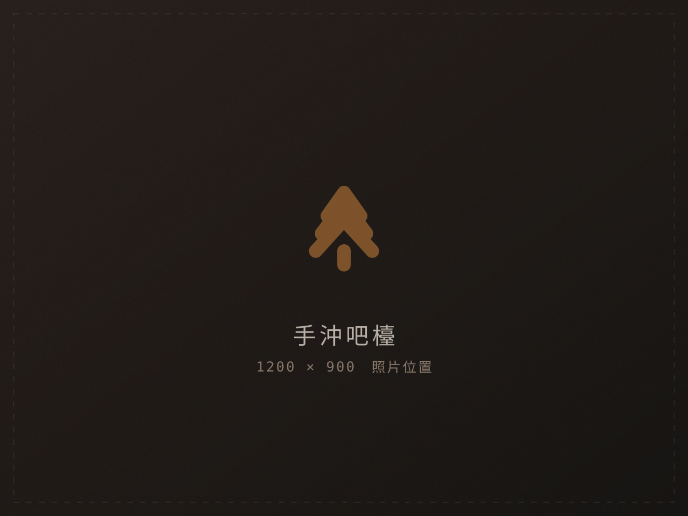

01關於焙煎
深焙不是把豆子燒黑
是把甜味逼出來
淺焙當道的這幾年，深焙常被說成是「掩蓋瑕疵」。我們的看法相反： 豆子的缺點在深焙裡無所遁形，焦味、木質味、澀感，一個都藏不住。
所以我們只挑硬豆，只做小批次，一次十二公斤。 鍋爐的火力曲線每一支豆子都不一樣，記錄在牆上那本手寫的本子裡， 翻開來就是這間店的全部家當。
— 焙煎師 松川 真
02本季單品
四支豆子，四種深度
每週三上午十點更新供應狀態，售完會即時劃掉。
-
瓜地馬拉 安提瓜
GUATEMALA ANTIGUA ・ SHB ・ 水洗
黑糖 核桃 可可脂
City+半磅 420
-
印尼 曼特寧 林東
INDONESIA LINTONG ・ G1 ・ 濕剝
黑巧克力 杉木 草本
Full City半磅 460
-
巴西 喜拉朵 日曬
BRAZIL CERRADO ・ NY2 ・ 日曬
焦糖 烤堅果 微煙燻
French本週售完
-
衣索比亞 耶加雪菲
ETHIOPIA YIRGACHEFFE ・ G2 ・ 水洗
柑橘皮 紅茶 蜂蜜
City半磅 480
03店裡的樣子
走進來就聞得到




04來店資訊
找得到我們
外帶豆子不用預約；想聊風味或杯測，來之前先講一聲比較有空招呼你。
- 電話
- 04-2301-8888
- 營業
- 週三至週日 11:00–19:00
週一、週二公休（焙煎日不開放內用）